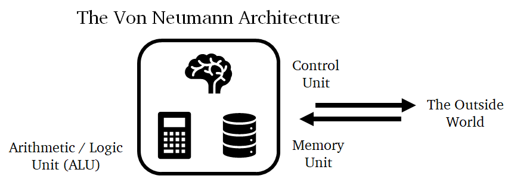
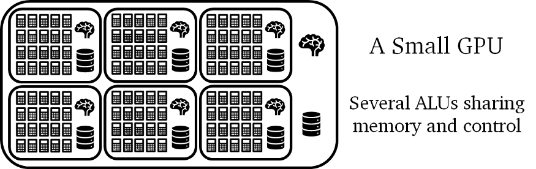
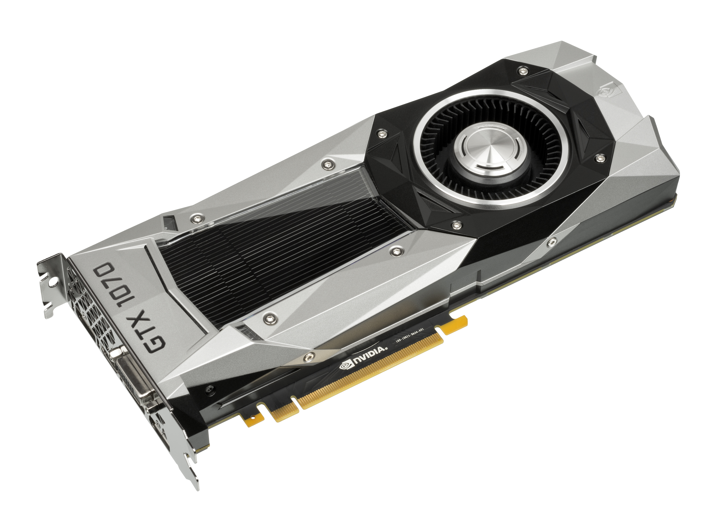
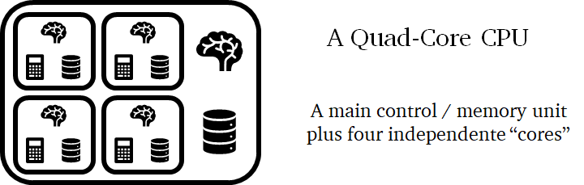
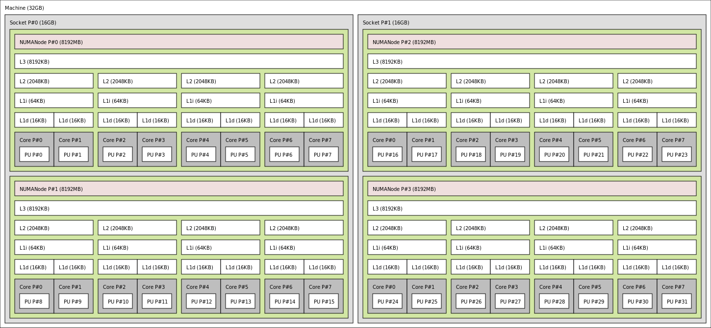
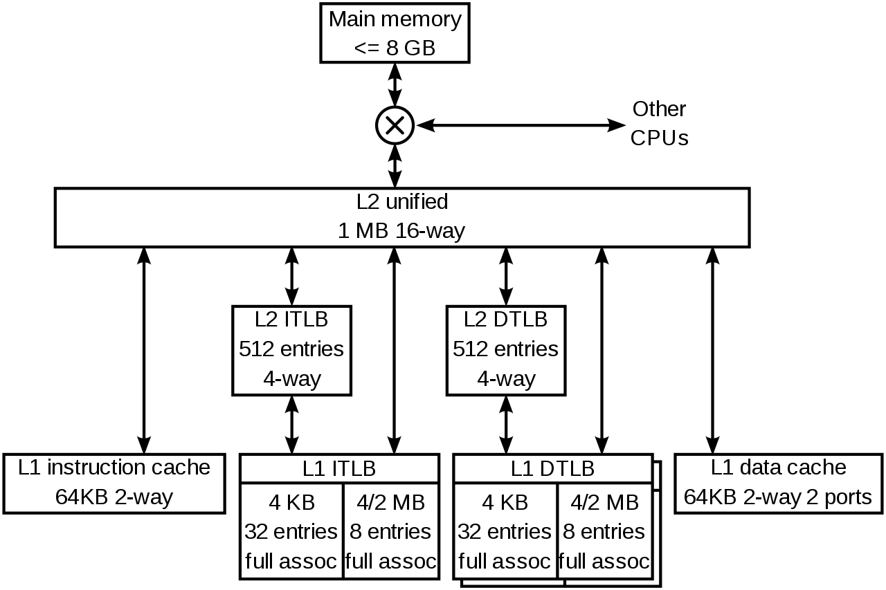
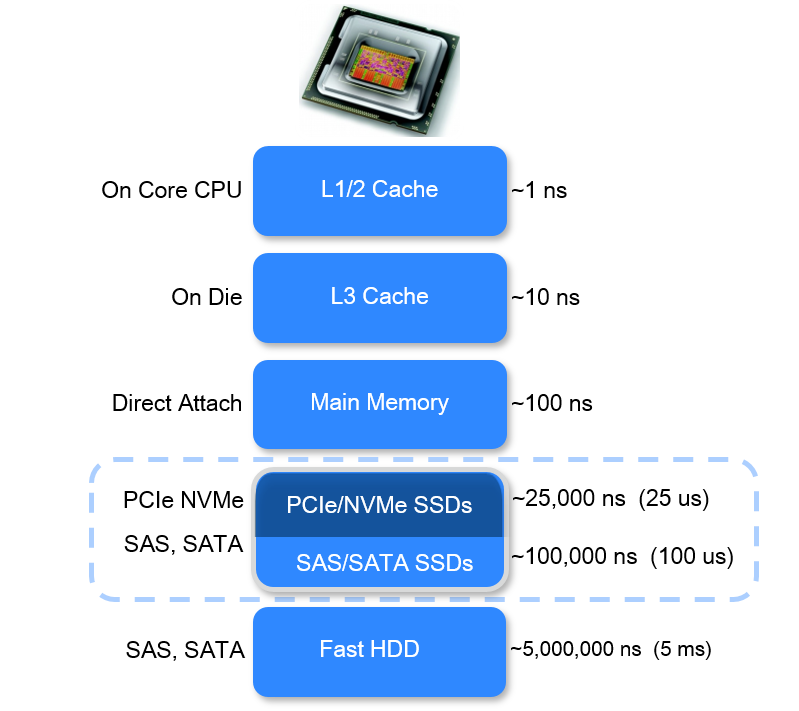
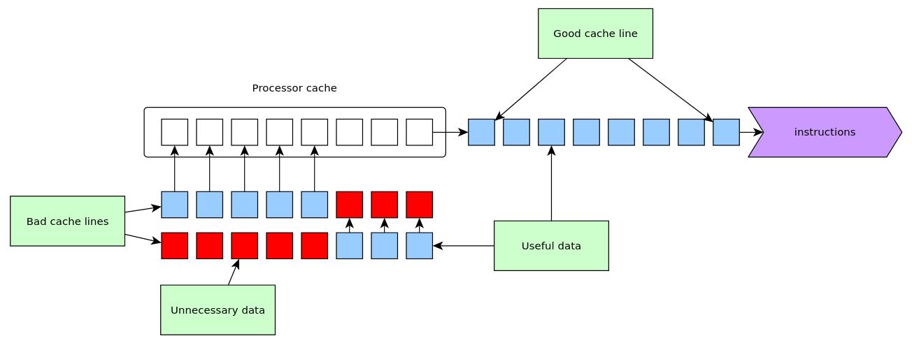
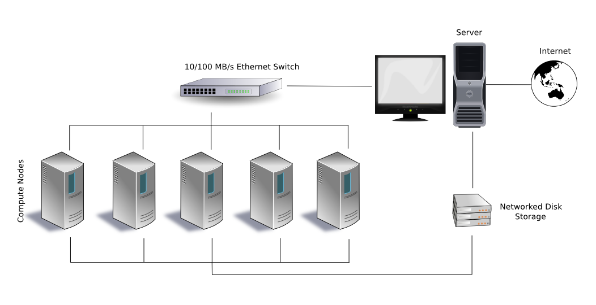
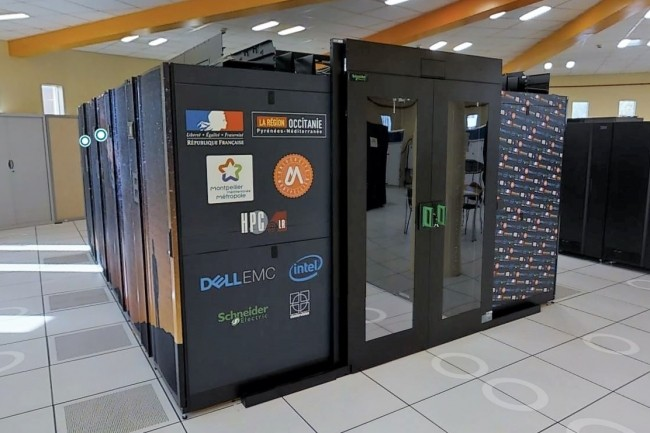

10 GPU computing, CPU cache, Computing cluster
The World of big clusters and complex message passing
11 GPU Computing
11.1 GPU ?
GPU = graphical process unit
“(…) a specialized electronic circuit designed to rapidly manipulate and alter memory to accelerate the creation of images in a frame buffer intended for output to a display device. GPUs are used in embedded systems, mobile phones, personal computers, workstations, and game consoles.” (Wikipedia)
Original purpose: image creation and manipulation for graphical rendering (video games, video edition, 3D conception, etc.)
11.2 GPU for computing ?
“Modern GPUs are very efficient at manipulating computer graphics and image processing. Their highly parallel structure makes them more efficient than general-purpose central processing units (CPUs) for algorithms that process large blocks of data in parallel.” (Wikipedia)
Nowadays usage: more general massive computations based on matrix operations
11.3 Von Neumann architecture
Basic principle (present in most modern computing units) with three interconnected parts:
- control unit: does most of the work, such as deciding what operation to do next, fetching the next instruction from memory, etc.
- arithmetic/logic unit (ALU): implements operations such as addition, subtraction, multiplication, etc.
- memory unit: stores the data processed by the chip, such as its inputs, outputs, and any intermediate data
11.4 Von Neumann architecture, schema

11.5 GPU architecture

Principle: control units are large and expensive, while arithmetic units are more straightforward and cheaper
Design: a sub-processor = one control unity commanding several ALUs (= GPU cores) to operate on larger chunks of data
Limitation: all ALUs (connected to the same control unity) must obey the same commands (i.e. do the same thing at the same moment)
11.6 GPU trades “control” for “arithmetic power”
ALU blocks (= gpu sub-processors) not as versatile as CPU cores but can operate over large amounts of data in batches
Central control unit syncs all the sub-processors (each one can do a different task) but the same set of ALUs cannot do different things in parallel (e.g.
ifstatements costly for GPUs)
Example: each block of 16 ALUs is limited to processing the same instruction over 16 pairs of operands
11.7 Latency vs Throughput
- Latency: how long does it take to finish a given task
- Throughput: how many times can you complete the task within a period
CPU cores optimized for latency: to finish a task as fast as possible.
\rightarrow scales with more complex operations but not with larger data
GPU cores optimized for throughput: individually slower, but they operate on bulks of data at once.
\rightarrow scales with larger data but not with more complex operations
11.8 Latency vs Throughput: an analogy (I)
Travelling by road:
- latency: use a sport car (faster but can only take 2-5 persons)
- throughput: use a bus (slower but can take up to 80 persons)
Total time to transport 5 persons over 100km (latency):
- 1 trip with a 80-seat bus at 50km/h: 2hours
- 1 trip with a 5-seat car at 200km/h: 0.5hours
Total time to transport 160 persons over 100km (throughput):
- 2 round trips with a 80-seat bus at 50km/h: 8hours
- 32 round trips with a 5-seat car at 200km/h: 32hours
11.9 Latency vs Throughput: an analogy (II)
Fastest way to learn?
Latency: private teacher or small classroom
Throughput: big classroom or online course
\rightarrow none is arguably better than the others, all work and fill a specific need
11.10 CPU vs GPU: hardware side
| Type | Nb of cores | Memory (cache1) | Memory (device) | Power per core | Clock rate2 |
|---|---|---|---|---|---|
| CPU | 10\times | 10\times - 100\times KB | 10\times - 100\times GB3 | 10\times W | 3 - 5 GHz |
| GPU | 1000\times | 100\times B | 10\times GB4 | 0.01\times - 0.1\times W | 0.5 - 1 GHz |
11.11 CPU vs GPU: concept side
| CPU | GPU |
|---|---|
| Task parallelism | Data parallelism |
| A few “heavyweight” cores | Many “ligthweight” cores |
| High memory size | High memory throughput |
| Many diverse instruction sets | A few highly optimized instruction sets |
| Software thread management | Hardware thread management |
11.12 GPU = dedicated chip
GPU is a HUGE chip (\sim 30\times 10 cm)
mounted through PCI-express connection

11.13 CPU vs GPU comparison: an example
11.14 CPU vs GPU comparison: an example, CPU
AMD Ryzen Threadripper 2990X processor: 32cores (each capable of running two independent threads), 3 GHz up to 4.2 GHz (boost) clock rate, 2 instructions per clock cycle, each thread processes 8 floating-point values at the same time
11.15 CPU vs GPU comparison: an example, GPU
Nvidia RTX 2080 TI GPU: 4352 ALUs, 1.35 GHz up to 1.545 GHz (boost) clock rate, 2 operations per clock cycle, one floating point operation per ALU
11.16 Performance illustration
Throughput:
Maximum theoretical number of floating-point operations they can handle per second (FLOPS)
- CPU (Ryzen): (4.2 \times 10^9) \times 2 \times (8 \times 64) = 4309.8 \times 10^9 FLOPS \approx 4.3 TFLOPS
- GPU (2080 TI): (1.545 \times 10^9) \times 2 \times 4352 = 13447.68 \times 10^9 FLOPS \approx 13.4 TFLOPS
Latency: the CPU clocks at 4.2 GHz, while the GPU clocks at \sim 1.5 GHz, nearly three times slower
\rightarrow one is not better than the other, they serve different purposes
11.17 From 3D image processing (for games) to general-purpose computing
image processing = large matrix operations
\rightarrow why not using GPU for general matrix operations?
Example: deep-learning = combination of linear transformation (=matrix product) and simple non-linear operations
General-Purpose Graphics Processing Units (GPGPU): computations on GPU not dedicated to image processing
11.18 Hardware
Nvidia (with CUDA drivers)
AMD (with AMD drivers or openCL)
11.19 Software (Python)
11.20 Software (R)
Example with gpuR:
ORDER = 1024
A = matrix(rnorm(ORDER^2), nrow=ORDER)
B = matrix(rnorm(ORDER^2), nrow=ORDER)
gpuA = gpuMatrix(A, type="double")
gpuB = gpuMatrix(B, type="double")
C = A %*% B
gpuC = gpuA %*% gpuB
all(C == gpuC[])
[1] TRUE11.21 In practice
See the dedicated notebook “GPU computing with Numba (introduction)” in the Applications list.
12 Memory Cache
12.1 CPU cache ?
Cache = on-board memory unit for CPU cores

12.2 Example of architecture

12.3 Cache memory size
Very small
- L1 Cache = 10\times KB (per core)
- L2 Cache = 100\times KB (per core)
- L3 Cache = 1000\times KB (shared per CPU)
Example:

Wikipedia (K8 core in the AMD Athlon 64 CPU)
12.4 Cache access time (latency)

12.5 CPU cache miss
data transferred from memory to cache by blocks of contiguous data
to be efficient: necessary to use contiguous data in computations

12.6 In practice
See the dedicated notebook “CPU Cache and its impact on computations” in the Applications list.
13 Computing cluster
13.1 Cluster
a front-end server: user interface to submit computations, accessible from the internet (e.g. by
sshconnection or through a web interface)many computing servers (also called computing nodes or workers) that run the computations
one or more storage servers: to store the data and results

13.2 Usage
single-node multi-core computations (multi-threading or multi-processing)
multi-node computations (distributed computations)
GPU computing
combinations of two or more
13.3 Illustration
MUSE cluster at MESO@LR computing center in Montpellier

13.4 Resource management
How to share the computing resources (cores, memory, full nodes) between user?
\rightarrow a resource management system (also called a scheduler) to assign resources to users depending on their request
Functions:
- allocating exclusive and/or non-exclusive access to resources (computer nodes) to users for some duration of time so they can perform work
- providing a framework for starting, executing, and monitoring work, typically a parallel job
- arbitrating contention for resources by managing a queue of pending jobs
13.5 An example
SLURM = a job scheduler for clusters and supercomputers
Job submission:
- In-session command submission (e.g. requesting 16 cores with 32GB of RAM memory and a RTX 2080 TI GPU, on a single node, during 3 days):
srun -N 1 -c 16 --mem=32G --gpus=rtx2080:1 -t 3-0 my_command- Script submission to be run off-session (e.g. requesting 3 full nodes during 96hours):
sbatch -N 3 -t 96:0:0 my_script.sh